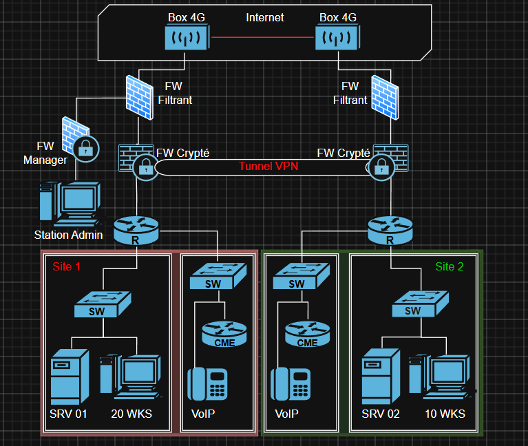

L'entreprise
Informations générales
- nom
- Brigade de Renseignement et Cyber-Électronique (BRCE)
- secteur
- Armée de Terre
- lieu
- Caserne Stirn, Strasbourg
- taille
- Restreinte
Détails du stage
- poste
- Assistance à la création d'un réseau sécurisé complexe
- équipe
- État-major de la BRCE
- durée
- 20 avril – 12 juin 2026 (8 semaines)
Héritière du commandement du renseignement des forces terrestres, la brigade de renseignement et cyber-électronique a été créée en 2024 et son état-major est stationné à la caserne Stirn à Strasbourg. Dans le cadre de la transformation de l'armée de Terre de combat, la brigade (BRCE) est subordonnée au commandement des actions dans la profondeur et du renseignement (CAPR).
Outre l'état-major, la brigade comprend 3 régiments :
- le 2e régiment de Hussards (renseignement d'origine humaine, ROHUM) ;
- le 44e régiment de transmissions (renseignement d'origine électromagnétique, ROEM, stratégique et opératif) ;
- le 54e régiment de transmissions (ROEM tactique).
On y trouve également le centre de formation initiale des militaires du rang du renseignement, le 151e régiment d'infanterie et la 785e compagnie de guerre électronique.
La brigade est formée et entraînée pour répondre au contrat opérationnel de l'armée de Terre. Elle possède des capacités de recherche spécialisées dans le renseignement d'origine humaine (2e régiment de Hussards) et électromagnétique et cyber (44e RT, 54e RT et 785e CGE).
Le BSIC (Bureau système d'information et de communications) a pour mission principale de concevoir et de fournir les systèmes d'information et de communication à l'état-major de la BRCE lors de son déploiement. Il a également une mission permanente visant à assurer son fonctionnement au quartier.

Signification de l'insigne
L'insigne de la brigade de renseignement est composé d'un écu bleu (couleur des transmissions ; il existe d'autres couleurs comme le vert, couleur de la cavalerie, et le rouge, couleur de l'artillerie), d'un globe terrestre et de foudres. Le globe est surmonté d'un hibou grand-duc.
- La vision nocturne. Le grand-duc voit dans l'obscurité totale. C'est une métaphore directe du renseignement : percevoir ce que l'adversaire cherche à cacher.
- La discrétion et le silence. Le grand-duc chasse en silence, sans se faire repérer, comme la discrétion absolue des unités de renseignement, humain ou électromagnétique.
- La sagesse. Le hibou est l'attribut de Minerve/Athéna, déesse de la sagesse et de la stratégie. Le renseignement, c'est l'art de transformer l'information brute en analyse utile à la décision.
- La vision à 270 degrés. Le grand-duc tourne la tête sur un angle très large, ce qui symbolise la surveillance tous azimuts, y compris dans les domaines cyber et électromagnétique.
- Le prédateur patient. Il observe longuement avant de frapper avec précision, comme la boucle renseignement-feux que la BRCE cherche à accélérer avec le CAPR.
Les deux étoiles en haut à gauche de l'insigne sont le symbole des brigades.
Missions réalisées
// mission principale
Déployer un réseau tactique comprenant le raccordement de sites distants et de clients mobiles par VPN (une connexion chiffrée).

Assister l'officier cybersécurité dans les phases d'analyse de risque et de rédaction des documents de sécurité.
Assister l'officier cybersécurité lors de l'audit organisationnel.
Assister l'administrateur de sécurité lors de l'audit technique.
Assister les administrateurs dans le déploiement des éléments actifs du réseau.
Compétences acquises
Pendant le stage, j'ai acquis des compétences en cybersécurité (analyse de risques, rédaction documentaire, audit organisationnel et technique, administration) ainsi que des compétences réseau en déploiement actif.
Cybersécurité
Réseau
Ce que j'ai appris
Nouveaux acquis en réseau
J'ai énormément appris sur les normes réseau, notamment la manière de procéder de l'armée de Terre comparée à celle d'une entreprise civile. Les protocoles, les sécurités et les services diffèrent selon l'entreprise, mais aussi selon la demande et l'expérience de l'administrateur réseau en charge du projet.
J'ai pu voir et apprendre beaucoup sur la mise en place d'un serveur et de ses services, mais aussi sur toute l'infrastructure à mettre en place derrière ce serveur et ses clients pour que tout fonctionne.
J'ai pu m'entraîner à mettre en place des protocoles que je connaissais déjà, et offrir mon expérience aux autres administrateurs réseau.
Nouveaux acquis en système
En système, j'ai travaillé sur différentes versions de Windows Server. J'ai appris à mettre en place un serveur physique, à le démarrer sous Windows Server, à gérer les problèmes au démarrage et à partitionner les disques selon les services demandés. J'ai appris à utiliser l'hyperviseur Hyper-V, très différent de celui que j'utilise souvent : VirtualBox.
J'ai appris à monter des serveurs virtuels, à me servir du gestionnaire de serveur Windows, à installer de nombreux services en suivant des documentations et avec mes propres expériences, ainsi qu'à mettre en place la communication des serveurs à travers un Active Directory (élément indispensable dans les grandes entreprises).
Rapport de stage
Rapport de stage, BUT R&T Cybersécurité. Chloé Charon, IUT de Colmar, année 2025-2026.
Bilan et retour d'expérience
Ce que ce stage m'a apporté
Ce stage au sein de l'armée de Terre m'a fait découvrir une toute autre facette du réseau et de la cybersécurité. J'ai été témoin de nombreuses procédures et mises en œuvre différentes de celles du monde civil.
L'ambiance au sein de l'armée de Terre est très familiale, accueillante et fondée sur le respect. Chacun a sa place et son mérite. Je m'y suis sentie à ma place, et j'ai passé 2 mois auprès de militaires qualifiés dans leurs domaines, avec l'envie de transmettre leur savoir.
En quoi ce stage me sera utile
Ce stage m'a mise en situation de déploiement d'un réseau avec des exigences en cybersécurité et en réseau. J'ai vu les nombreuses procédures de l'armée de Terre lors d'un déploiement : les règles, les limites, les possibilités et les outils.
J'ai pu toucher à toutes les parties de ce déploiement, de la partie physique du réseau à la partie système. J'ai appris à suivre des directives et des demandes particulières, et à respecter les normes de sécurité imposées. J'ai pu mettre en œuvre la majeure partie de mes compétences acquises en BUT Réseaux et Télécommunications, et en consolider une partie.
Je vais pouvoir réutiliser ces compétences en troisième année de BUT, dans de futurs stages et alternances, et dans mon futur métier de pentesteuse.
// devise de la brigade
« Par Saint-Raphaël, vive le renseignement et par Saint-Gabriel, vive les transmissions ! »